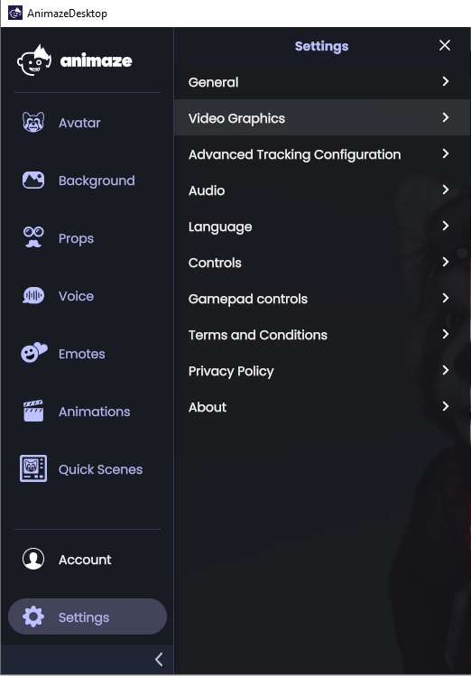
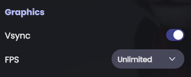
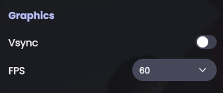
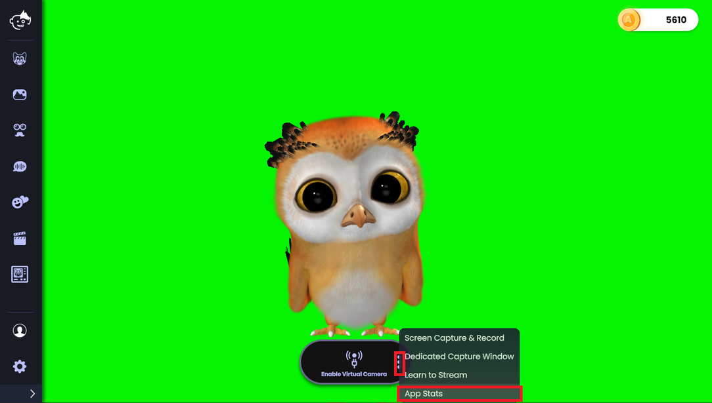
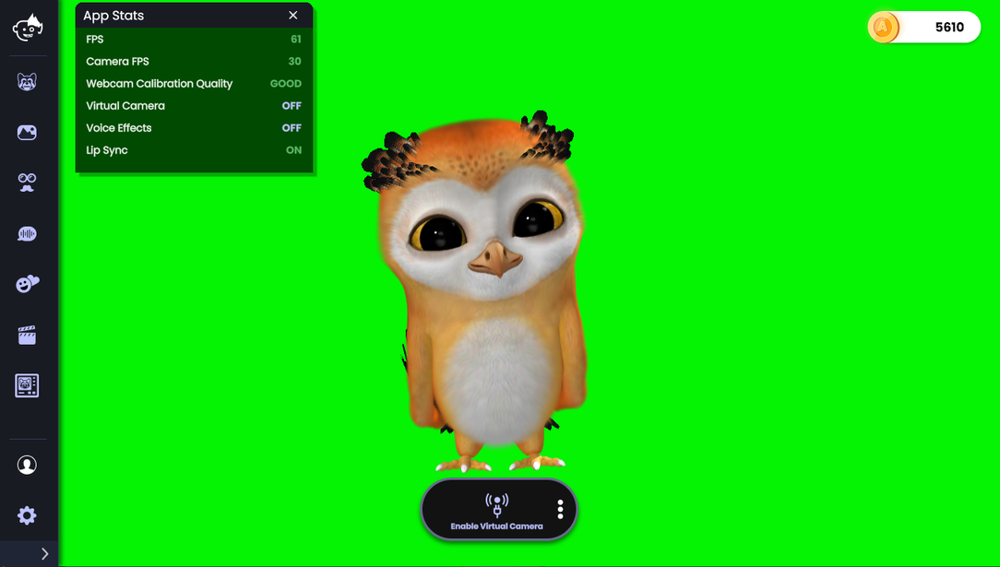
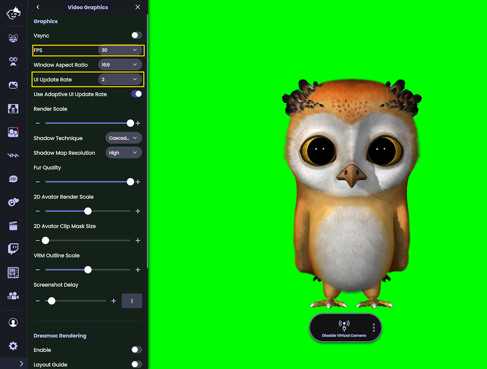
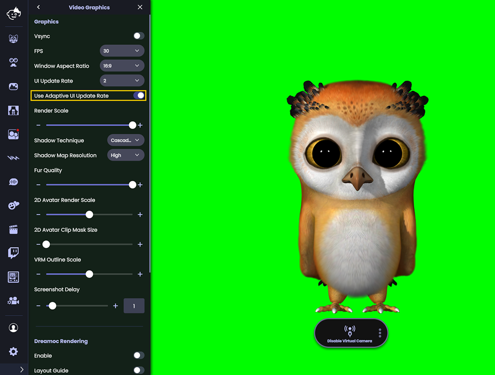

Animaze Desktop: How can I improve my CPU/GPU Usage via Limiting FPS?
When you use Animaze to stream, it runs in parallel with other resource-intensive software such as demanding games and OBS (or other streaming software). To that end, you will want to manage the resources such that each gets its fair share of CPU and GPU cycles and no single software hogs resources.
There are many different ways to manage the Animaze load on your system (both on CPU or GPU). This article focuses on the most common solution: optimally limiting the number of Frames Per Second (FPS) that Animaze generates.
There are two methods to limit FPS within Animaze, each with its own particularities.
Method 1: Match the max Animaze FPS to the Monitor VSync timing (also known as Vertical Refresh Rate). This option is ideal in terms of smooth video and performance.
Method 2: Limit FPS via an Animaze-side software frame-capper. As we offer many FPS limits within Animaze, this method has the most optionality. However, limiting FPS in Animaze tends to have lower quality and worse performance compared to Method 1. Below, we’ll explain why you should avoid limiting the frame count using the Animaze frame limiter.
Method 1: Capping the Framerate via VSync
Navigate to Settings > Video Graphics Settings.

Set VSync on and FPS to unlimited (these should be the defaults).

These settings tell Animaze not to limit the frame rate internally. Instead, the frame rate limit will rely on the monitor refresh rate. If you have multiple monitors, this setting will use the monitor where Animaze is active.
If you have a monitor with a max 60 Hz refresh rate or are comfortable limiting your monitor refresh rate to 60 Hz refresh, then this is the best setting combination.
If you have a fancy monitor capable of higher than 60 Hz refresh rate (120, 144, or even or higher refresh rates), while it’s tempting to let Animaze render at the highest available value, we’ve found that often it’s not optimal. Animaze attempts to find the lowest number of every frame in n required to render at 60 FPS. For instance, for a 120 Hz refresh rate, Animaze renders one in two frames (final FPS 60). Similarly, for a 144 Hz refresh rate, Animaze again renders one in two frames (final FPS 72). Finally, for a 300 Hz refresh rate, Animaze renders one in five frames.
Using a 60 Hz refresh rate and VSync on allows a 60 FPS stream without allocating extra CPU power to fancy frame-capping computations. As such, this configuration is one of the most effective ways to avoid micro-stuttering, with very little CPU cost.
Note: Only tweak your monitor refresh rate or alter your GPU VSync settings as a last resort. If you do make such changes, please make sure to restart Animaze to see those changes take effect.
Method 2: Using the App-side software frame-capper
Method 2: Only attempt if Method 1, for some reason, is not viable. Method 2 means selecting any other value than “Unlimited” in the Video Graphics FPS settings, while VSync is off.

While Method 2 offers more control over the Animaze frame rate, selecting an FPS value other than unlimited, will have one of two negative side effects:
a. You may experience a fair amount of framerate micro stuttering as this setup does not ensure even frame rendering intervals.
b. Smoothing the micro-stuttering can be done, but it consumes so many CPU resources it may negate most of the advantages of capping the framerate in the first place.
Currently, the Animaze frame capper design favors less CPU consumption even if it results in micro stutters. Due to the micro stutter CPU consumption trade-off of Method 2, we recommend using VSync ON plus unlimited FPS.
How to check current FPS in Animaze
To see what is the Animaze current FPS you can open the App Stats window:


Please note that the App Stats window (like any UI elements that need to update frequently) should be closed if not needed, to optimize for performance - only have it open if you need it.
An extra way to improve resource management in the Animaze app is to tweak the UI update rate. This will help the Animaze app run on less resources, that would otherwise be used for the app’s frame
To do so, you will need to open the Settings in the Animaze app and then select Video Graphics.
One scroll down in the Video Graphics menu will unveil the UI update rate.
Here you will be prompted to choose one of two scenarios:
On one hand, you can customize the usage by choosing from 5 settings, which are divider values for the 3D rendering (main app) framerate ( e.g. main app at 60 fps w/ UI update rate 2, means UI is running at 30 fps). Use this option to save some CPU/GPU resources that otherwise would be used on the UI update rate.

On the other hand, you can also opt to enable the Use Adaptive UI Update Rate check, that will optimize the usage for you
